外科・麻酔 (Surgery)
28 templates available

ASA分類
ASA身体状態分類テンプレート。I-VI類の術前リスク評価に使用。

マランパティスコア
マランパティスコアテンプレート。気管挿管困難度の予測に使用。

水分バランスチャート
水分バランスチャートテンプレート。IN/OUTバランスの経時的モニタリングに使用。

血液ガスモニタリング
血液ガスモニタリングテンプレート。pH/PO2/PCO2の経時変化をプロット。

人工呼吸器波形（術中）
術中人工呼吸器波形テンプレート。圧・流量・容量波形をプロット。

MAC値
MAC値テンプレート。吸入麻酔薬のMAC値比較に使用。

疼痛管理ラダー
WHO疼痛管理ラダーテンプレート。3段階の鎮痛法をプロット。

手術創分類
手術創分類テンプレート。清潔/準清潔/汚染/感染の感染リスクをプロット。
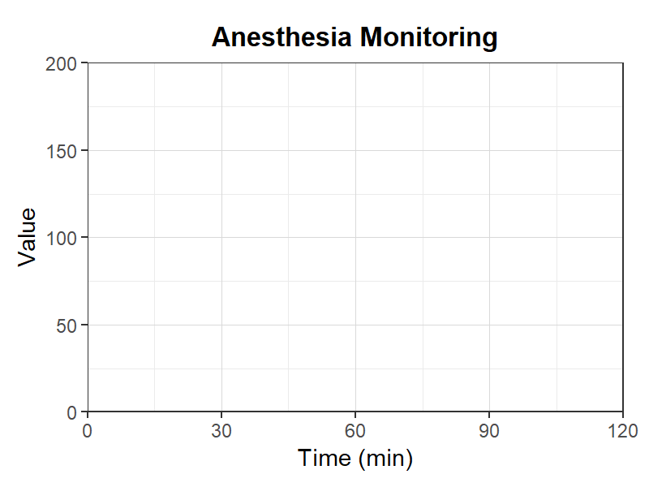
麻酔モニタリング
麻酔モニタリングテンプレート。HR/BP/SpO2/EtCO2の経時変化をプロット。
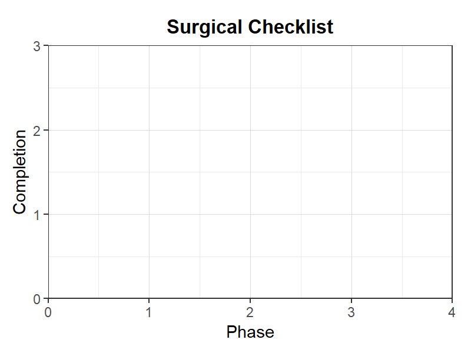
手術チェックリスト
手術安全チェックリストテンプレート。Sign In/Time Out/Sign Outの記録に使用。
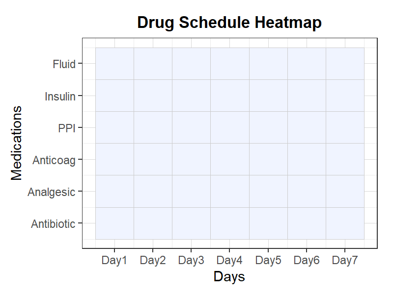
投薬スケジュール表
投薬スケジュールヒートマップ。術後の薬剤投与計画を可視化。

麻酔記録チャート
麻酔記録チャートテンプレート。術中のバイタルサイン・薬剤投与を記録。

術式別手術時間（箱ひげ図）
術式別の手術時間分布を比較する箱ひげ図テンプレート。
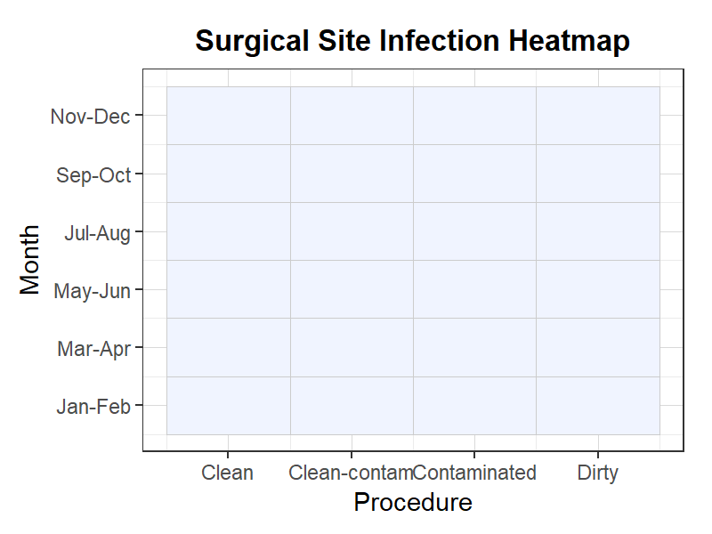
手術部位感染ヒートマップ
手術部位感染の発生パターンをヒートマップで表示するテンプレート。
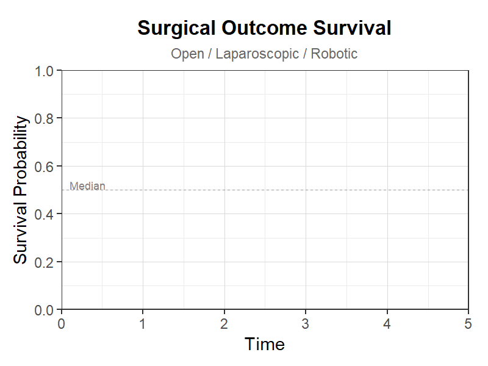
術後生存曲線
術式別の術後生存曲線テンプレート。
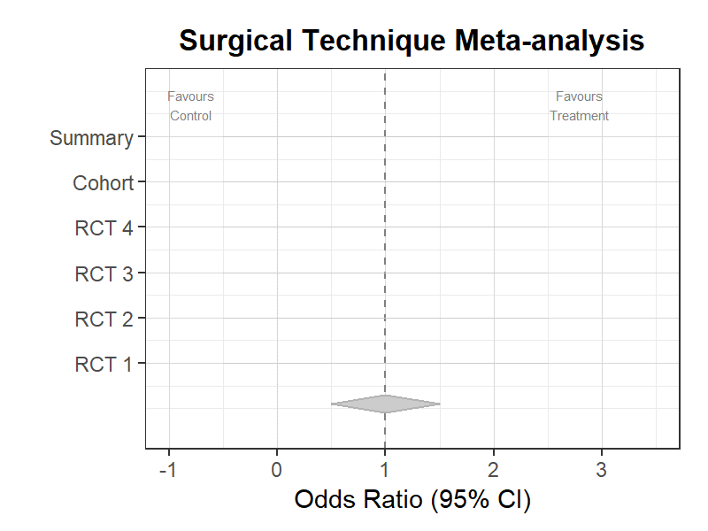
術式メタアナリシス
術式比較のメタアナリシスフォレストプロットテンプレート。
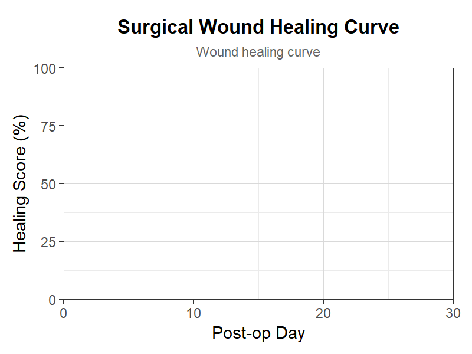
術後創傷治癒曲線
術後創傷治癒曲線テンプレート。手術創の治癒過程を追跡。
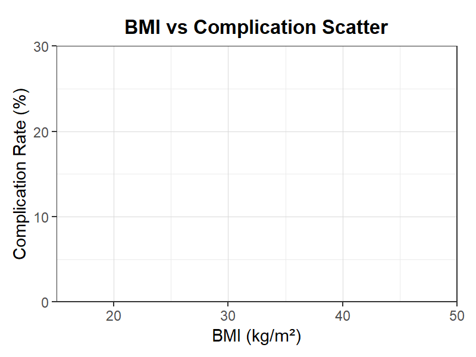
BMI-合併症散布図
BMI-合併症散布図テンプレート。術前BMIと術後合併症の関係。
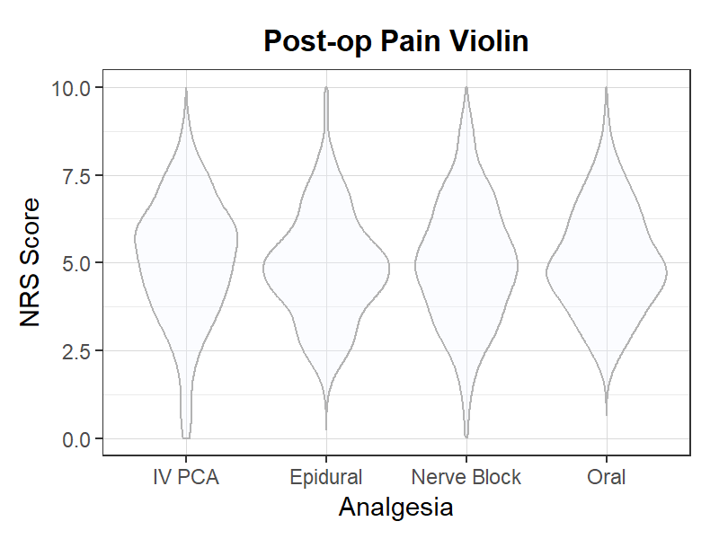
術後疼痛バイオリン
術後疼痛バイオリンプロットテンプレート。鎮痛法別の疼痛分布比較。
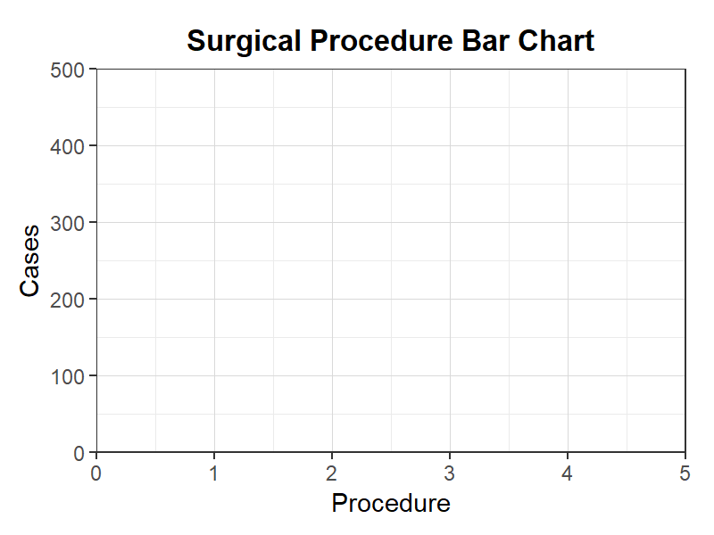
術式棒グラフ
術式棒グラフテンプレート。術式別の手術件数を比較。
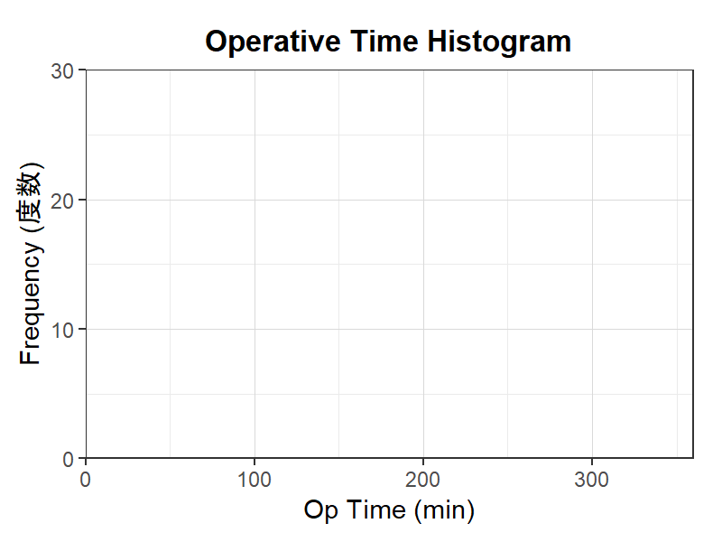
手術時間ヒストグラム
手術時間ヒストグラムテンプレート。手術時間の度数分布。
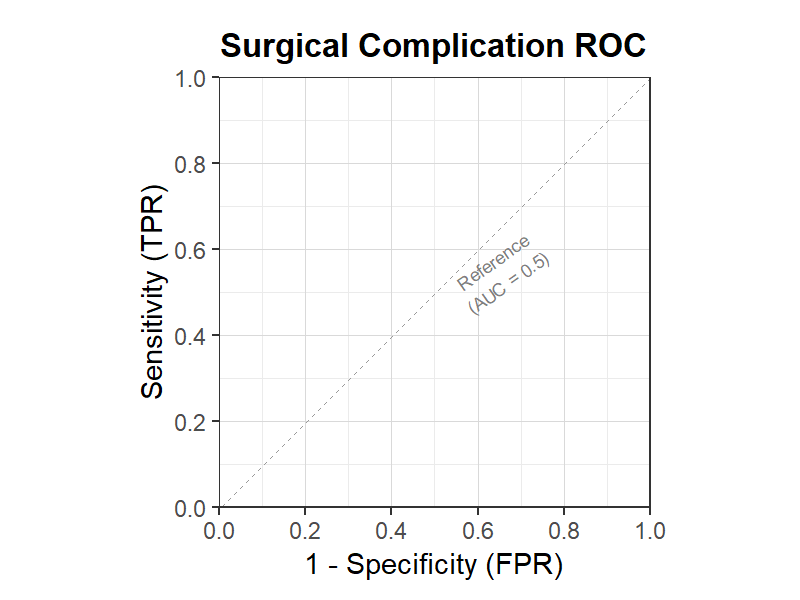
術後合併症ROC
術後合併症ROC曲線テンプレート。術後合併症予測スコアの精度。
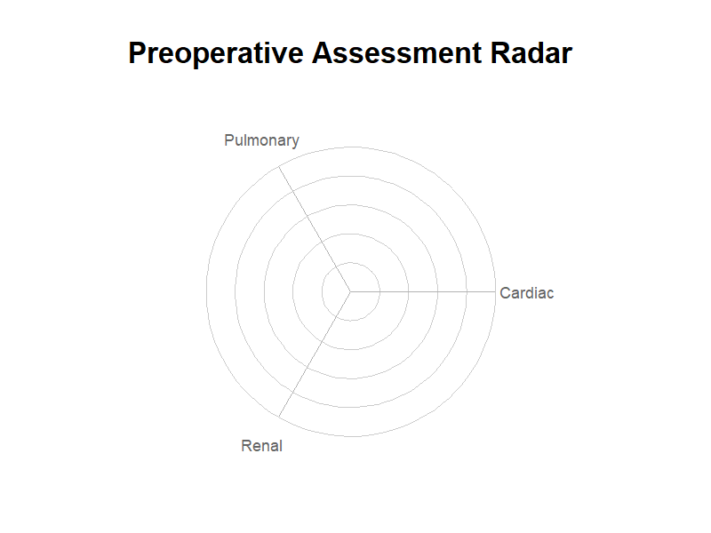
術前評価レーダー
術前評価レーダーテンプレート。術前全身状態を多軸で評価。
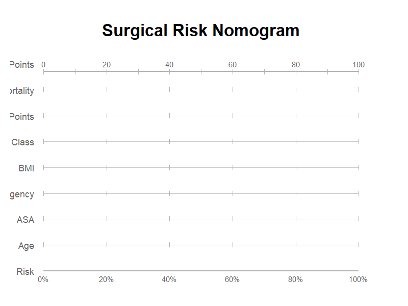
手術リスクノモグラム
手術リスクノモグラムテンプレート。術後合併症リスクの予測。
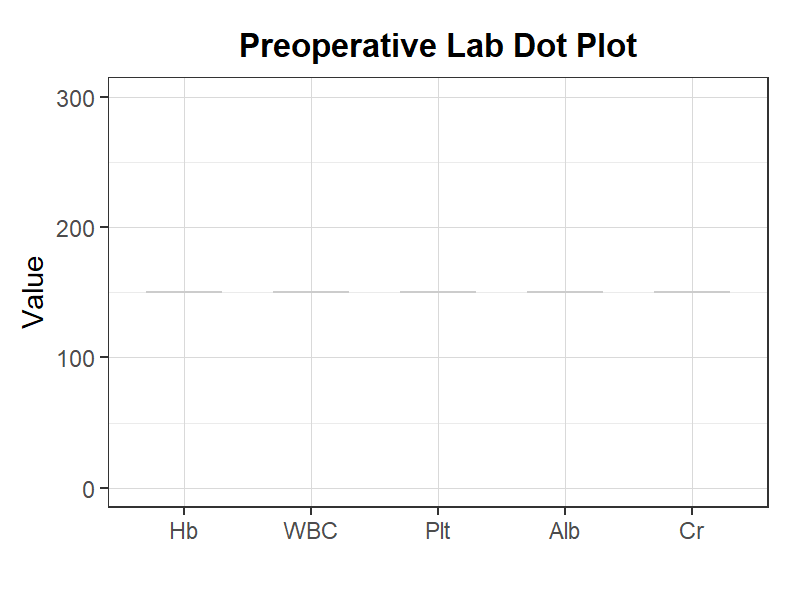
術前検査ドットプロット
術前検査ドットプロットテンプレート。術前検査の各項目を比較。
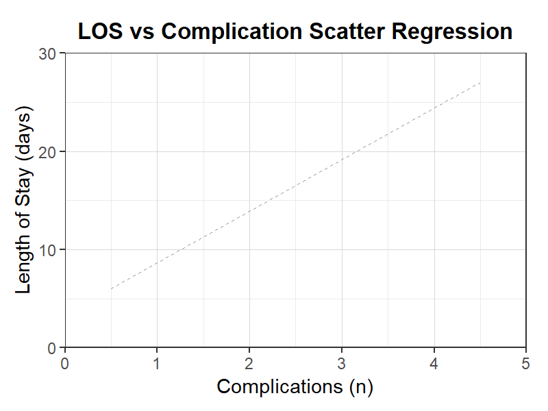
在院日数-合併症散布回帰
在院日数-合併症散布回帰テンプレート。合併症数と在院日数の回帰分析。
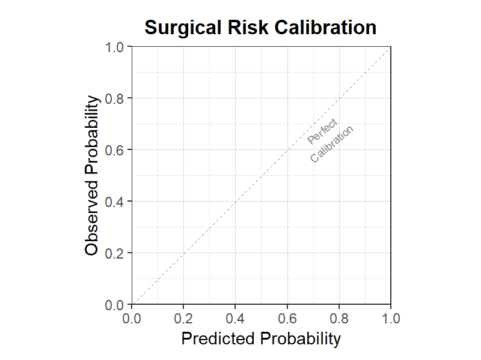
手術リスク較正
手術リスクスコア較正テンプレート。リスクモデルの妥当性検証。
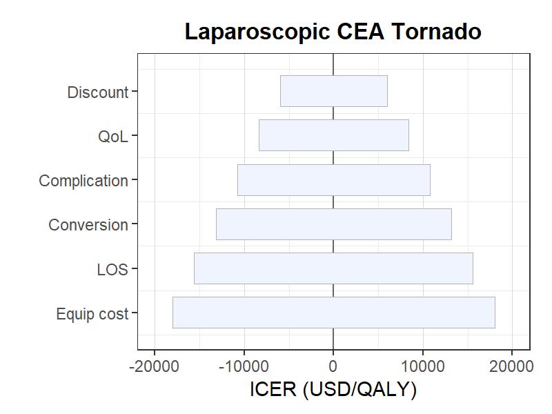
腹腔鏡費用効果トルネード
腹腔鏡手術費用効果トルネード図テンプレート。腹腔鏡vs開腹のCEA分析。